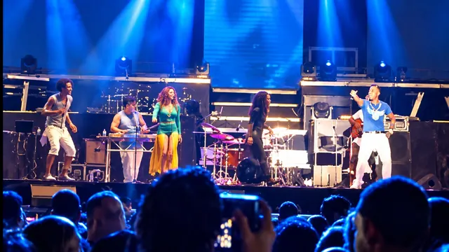
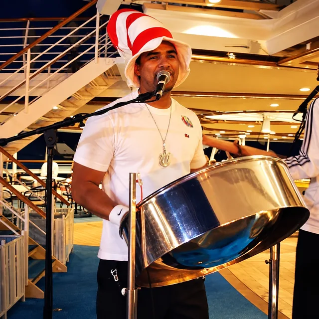
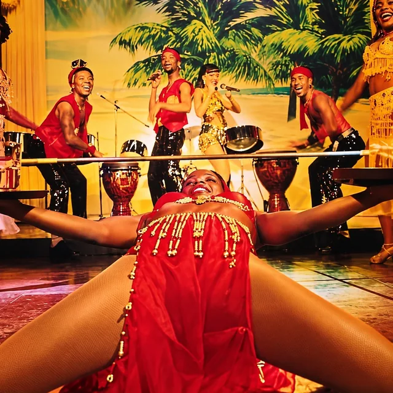
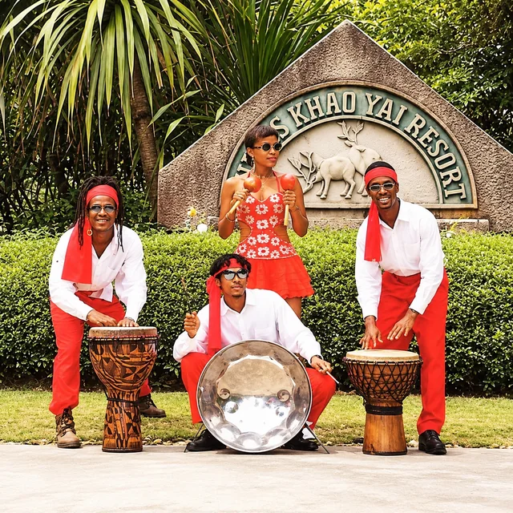
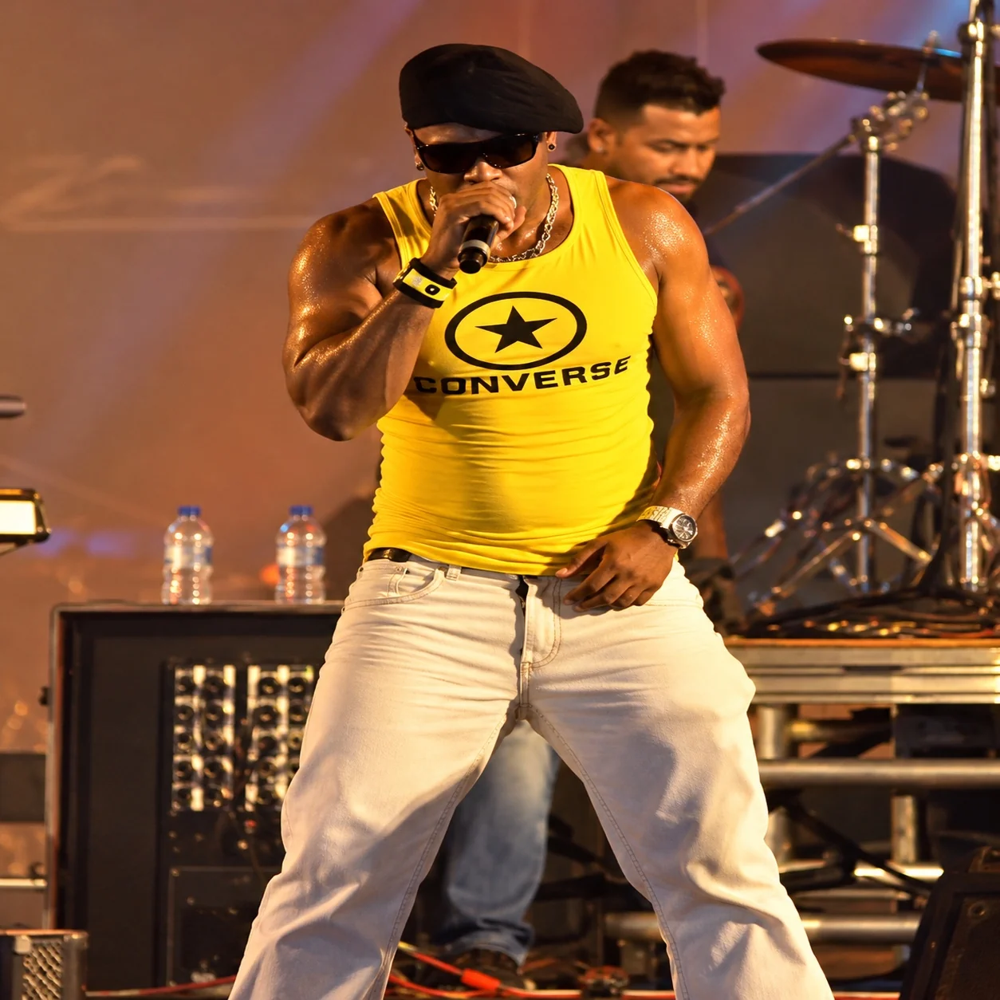
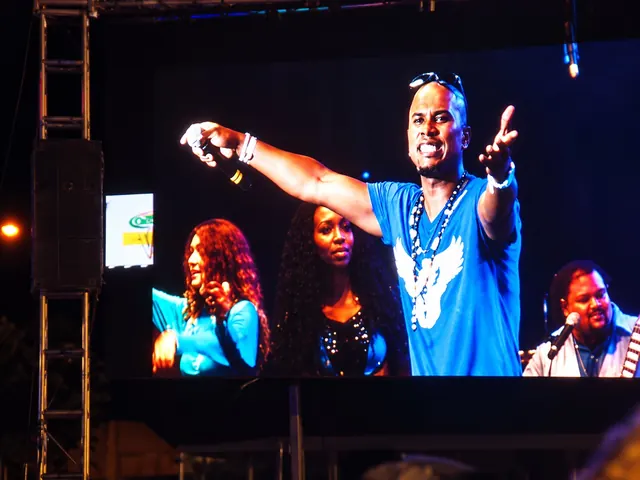

Official electronic press kit / artist & live entertainment
GORILLA
BOOMIN.
LEE VIARRUEL
THE ARTIST.
DJ / PRODUCER · LIVE VOCALIST · STEEL DRUMMER
Trinidad & Tobago roots. Based in Romania.
The artist / biography
ONE ARTIST.
A LIFETIME OF MUSIC.
Lee Viarruel, professionally known as GORILLA BOOMIN (G//BMN:), is a Trinidad-born artist, DJ, music producer, live vocalist and tenor steelpan musician, based in Romania.
Performing since the age of 11, Lee developed his craft as a member of Massive Chandelier, Ajala Band, Melobugz and Image & Company, alongside international show-group experience with Skylight and the Body & Soul Show Group from Australia. His live-performance background spans concerts, MMM and Machel Monday concert appearances, hotels and resorts, cruise ships, festivals and private events. His career has taken him across the Caribbean, Asia, the United States and Europe, including professional engagements in Japan and Thailand.
With extensive experience entertaining international audiences, Lee brings versatility, stage presence and genuine live musicianship to every performance. From sophisticated hotel lounges and resort entertainment to energetic concert stages, his foundation has always been connecting with people through music.
Today, GORILLA BOOMIN represents the next evolution of that journey: an artist combining DJ culture, original music production, powerful live vocals and the distinctive sound of the Caribbean tenor steelpan.
His signature direction blends expressive basslines, contemporary electronic music and Caribbean musical influences into an original performance experience.
For promoters and event organizers: GORILLA BOOMIN is available to discuss DJ performances, live artist shows, festivals, hotels and resorts, corporate events, private functions and selected creative collaborations. Performance formats and technical requirements are tailored to each booking.
REAL ARTIST. UNREAL WORLD.
THE BOOM IS THE SIGNAL.
DJ / Producer journey
BEHIND THE
DECKS.
GORILLA BOOMIN's DJ journey began in 2010, with early experiences in Miami and aboard international cruise ships.
Miami's club scene helped shape his love of electronic dance music. It was there that he developed a deep appreciation for the sounds of David Guetta, Skrillex, Tiësto, Martin Garrix, Marco Carola and Diplo — influences that later fed his curiosity about DJing, club grooves and electronic production.
Originally performing under the name DJ SKYLIGHT, Lee Viarruel developed his DJ skills alongside his professional work as a live vocalist and musician. Between shipboard performances, he learned from resident DJs and sometimes took over the decks during their breaks.
Starting with VirtualDJ and a laptop, he progressed to professional, club-standard CDJ equipment aboard cruise ships. Initially focused on dance and club music, he learned to keep a party moving with mixed-genre sets.
What started simply for the love of music became a favorite way to bring shipmates together: Lee regularly played crew parties and covered for resident DJs, mostly unpaid and just for the fun of it. He also entered and won DJ competitions in Miami. His paid DJ experience came through smaller land-based bookings, including bars and events in the Caribbean and Romania.
Today, as GORILLA BOOMIN (G//BMN:), he brings that practical DJ foundation together with decades of live musicianship and an evolving direction in original electronic music — from groove-driven minimal tech house to bass-focused and Caribbean-influenced club sounds. Live vocals and tenor steelpan add possibilities for distinctive hybrid performances.
FROM DJ SKYLIGHT TO GORILLA BOOMIN — THE SOUND CONTINUES TO EVOLVE.
Performance history
THE STAGE IS
HOME.
From Trinidad & Tobago live-band stages to international hotels and resorts, cruise-ship entertainment and concerts, Lee Viarruel’s performance history is built on real musicianship and a lasting connection with audiences.




Official photo archive / press imagery
THE VOICE.
THE MUSICIAN.
THE PERFORMER.
From commanding a microphone to bringing the tenor steelpan to life, Lee Viarruel’s versatility comes from years of performing for audiences around the world. Every performance is driven by musicianship, connection and the energy of a real live entertainer.


Authentic performance footage
SEE IT.
HEAR IT.
BIG PEOPLE PARTY
Live performance archive
MMM CONCERT
Old-school soca medley — live performance
103 FM MELA CONCERT
Liquid Lee — authentic live concert performance
Promoters / agents / venues
BRING THE
BOOM.
From intimate luxury venues to festival stages, GORILLA BOOMIN brings international performance experience, infectious energy and a distinctive fusion of live musicianship and modern dance music.
DJ / PRODUCER
Clubs, festivals and special events
LIVE ARTIST
Concerts, showcases and live entertainment
MAN OF STEEL
Premium live steelpan entertainment
Please include your event date, location, venue, expected audience and preferred performance format. Booking fees and technical requirements are available on enquiry.